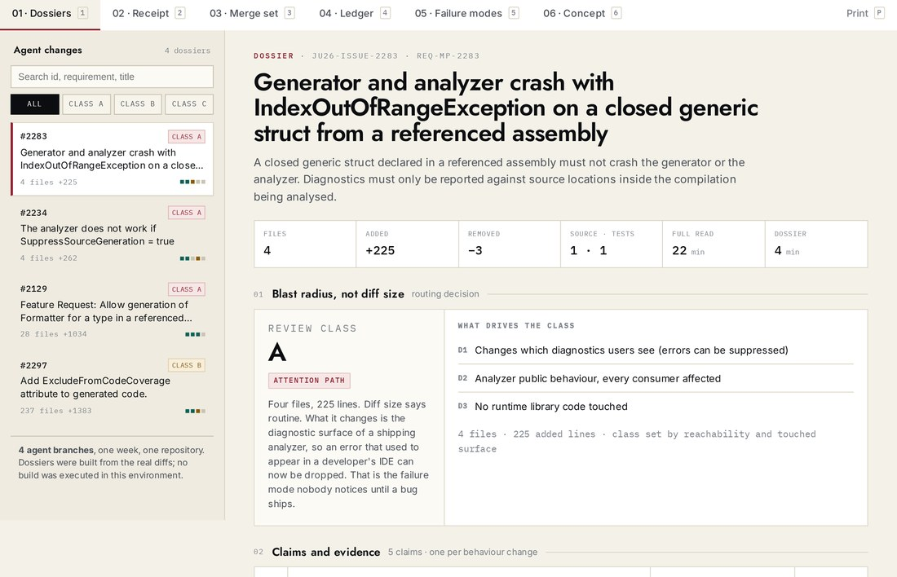
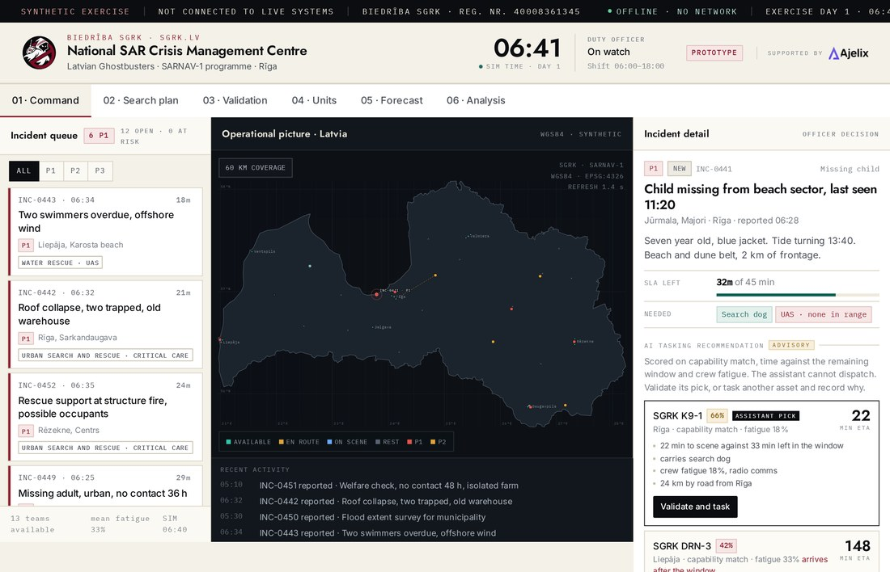

Review
Receipt
The AI recommends.
A person signs.
2026
Agent tokens
passed human tokens.
Review capacity did not move. The bottleneck is no longer writing code — it is deciding, defensibly, whether a change may merge, and who is accountable when it does.
Diff size says the wrong thing.
222 regenerated goldens. Two source edits. 368 of 368 attribute emissions guarded, provable in one invariant check. No person needed.
It changes which diagnostics users see. An error that used to appear in an IDE can now be dropped. A person is required.
Route on blast radius. Never on line count.
REQ-MP-2283 · 4 files · a person | REQ-MP-2297 · 237 files · one invariantThree artefacts. One chain of custody.
Dossier
Written by the agent, verified by an independent reviewer.
- Requirement ID and clauses served
- One claim per behaviour change
- A re-runnable check per claim
- Confidence per claim, not per PR
- Explicit refusals
- What was not checked
Receipt
Signed by a named human.
- Checked, and by what
- Not checked, and why
- Reported, owner decides
- Residual risk accepted
- Bound to the dossier hash
- Valid only for what was seen
Ledger
Joined from outcomes, not self-reported.
- Reverts within 14 days
- Linked incidents
- Claim accuracy per area
- Trust score per area
- Routing changes it earns
- Published miss rate
The AI has no signature line anywhere in the system. That is the whole design.
A machine may not approve.
It produces evidence and refusals. Approval is a signature bound to a hash.
A human hour per Class A change. Accepted.No requirement ID, no re-runnable check — it is prose, not evidence.
Dossiers take longer to write. Accepted.Not one score per pull request. Calibrated against outcomes later.
Calibration work per area. Accepted.Product intent is escalated and counted, never guessed.
Honest gaps are visible to auditors. Intended.Reachability, not line count. 237 goldens need one invariant.
A classifier to build and own. Accepted.A skipped build is printed on the artefact being signed.
Skipped tests stay on the record. Intended.One escape puts that area back on the attention path.
A ledger nobody can fake cheaply. Accepted.Seeded defects, published miss rate, no-look signature detection.
Weekly spot checks, published misses. Accepted.Two artefacts, one pattern.


The dossiers were authored over the real diffs and ship as static content. Nothing is fetched when the page runs.
Sixteen checks. Six open claims. Zero builds.
agent changes
with a dossier
files covered
by the four
pairwise merge
dry-runs
attribute emissions
correctly guarded
Twenty claims in the register. No claim without a source, a check or a label.
Two branches, opposite directions,
no conflict.
Wraps every diagnostic in a source-location filter.
ReportIfLocatedInCompilation(d)
Skips members, and relies on the same diagnostic to justify the skip.
intMembers.Add(key, …) // silent
Not a summary.
An attestation.
Four blocks, one hash, one name. The receipt is only valid for the dossier it was shown.
4 files · 5 claims · 2 findings · 2 refusals
Each supported claim with its source: a re-runnable check, a file:line, an invariant.
Build, test suite, round-trip behaviour. Reason stated on the artefact being signed.
Findings stay findings. The product question is escalated, not answered.
Unverified claims and behaviour under the other open branches.
The signature is blocked
until the findings are read.
Unacknowledged findings block the signature.
0013a62b
Signature binds to the dossier hash. Time-to-sign is recorded.
Bulk acknowledgement under ten seconds is logged as a no-look signature and enters the spot-check queue. Measured, not merely discouraged.
One primary metric.
Seven guardrails.
Escape rate
Reverts within 14 days plus linked incidents, per 100 merged changes. Flat or falling while review time falls. If it rises, that area drops back to Class A automatically.
Every row is labelled TARGET, MEASURED or ASSUMPTION. A ledger that only counts what the tool saw is listed among the reasons to distrust the system.
What we commit to measure. No baseline exists in this environment.
Produced by this exercise, from the real diffs. Reproducible.
Stated as an assumption, priced as one, never rounded up.
The assistant
cannot dispatch.
- Recommend — evidence, confidence, and the option to refuse.
- Decide — a duty officer validates, or tasks another asset and records why.
- Record — every recommendation and every decision in one ledger.
The domain changes.
The accountability does not.
| Code review | Search and rescue | |
|---|---|---|
| Evidence | Every claim carries a check or a file:line | Every recommendation carries its evidence lines |
| Refusal | Product decisions escalated, decider named | No suitable asset in range: declines to recommend |
| Signature | Receipt bound to the dossier hash | Tasking requires an officer action |
| Feedback | Trust per area moves routing | Validations and overrides reviewed after the exercise |
Compliance is moving
from documents to evidence.
Reference deployment
A national SAR platform, three months. Publish the baseline escape rate before and after.
Two paid pilots
Public-sector integrators, six months. The measurement is the product; the pilot buys the measurement.
Audit-export partnership
A notified body accepts the receipt as review evidence. That is the gate to regulated buyers.
The person who signs the audit response, not developer tooling.
Platform fee, metered attested changes, audit export. On-premise for classified work.
The outcome ledger per area. The format copies in a week; a trust history does not.
What we do not claim.
- ×No production deployment
- ×No measured productivity gain
- ×No incident data
- ×No validated classifier
- ×No build or test execution — no .NET SDK
- ×No claim that the code is correct
The receipt is
the unit of trust.
Not the pull request, not the model's confidence, not the green tick.
A named person, a written record of
what was and was not checked,
and a history that changes how much the next change is trusted.